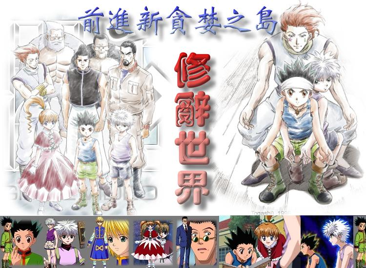

前進新貪婪之島─修辭世界
作者： 林士翔
適用年級：5∼6年級
主要領域：語文
次要領域：資訊教育
關鍵字： 修辭，作文，桂林國小，林士翔
標準
|
|
|
E-2-7 |
能配合語言情境閱讀，並瞭解不同語言情境中字詞的正確使用 |
|
|
E-2-9 |
能結合電腦科技，提高語文與資訊互動學習和應用能力 |
|
|
|
|
F-2-2 |
能正確流暢的遣辭造句、安排段落、組織成篇 |
|
|
|
|
F-2-6 |
能依收集材料到審題、立意、選材、安排段落、組織成篇的寫作步驟進行寫作 |
|
|
|
關鍵問題/情境
前進新貪婪之島？
小傑為了尋找傳說中的獵人父親，與奇犽進入了新貪婪之島，新貪婪之島裡面規定不能使用暴力，是個文明的社會，必須學練許多文學上的修辭能力，這些學練包括修辭中的「引用」、「示現」、「呼告」、「映襯」、「借代」、「排比」、「設問」、「頂真」、「感嘆」、「誇飾」、「對偶」、「層遞」、「摹寫」、「轉化」、「雙關」、「類疊」、「譬喻」等能力，學練完成後可獲得文學的賞析能量，增進自己的等級，才可以打敗其他的獵人，進而獲得父親的訊息，成為真正的文學獵人。
現在你的角色就是小傑或者奇犽，請你進行學練，學練道館是增進自己的能力，務必進入學練並完成新貪婪之島不同的模式任務，在此祝福你成功，完成任務。
任務
以下的任務是新貪婪之島給你的任務敬請完成：任務一：先到資源區把修辭祕笈下載後進行學練，比司吉（老師）會輔導你學練並了解其中的技巧。任務二：進入資源區中的基本道館學練，增進自己的能力。任務三：下載學練單並將你正在上的國語課文中分析修辭結構，分析愈多且正確者，所獲得等級愈高。任務四：請你利用任選4種修辭技巧寫下一篇400字的作文，題目是：我們這一班；或者由比司吉（老師）訂定。
資源
1.
歡迎來到前進新貪婪之島─基本道館來學練─加油！
歡迎進入基本道館學練，增進自己的修辭能力，由桂林國小林士翔老師自行設計，配合此課程實施。
2.
前進新貪婪之島─修辭祕笈
對於修辭介紹清楚明瞭，可以配合學習一定事半功倍，加油！
3.
林士翔老師修辭教學網頁
修辭介紹
評量標準
學習單.doc
參考資料
圖片資料來源： http://www.e-muse.com.tw/2005/hunter/index.htm http://www.e-muse.com.tw/2005/hunter/poto/03.htm
http://www.hunter-ova.com/ 修辭教材：修辭學:三民書局六下教師手冊備課課本：南一書局